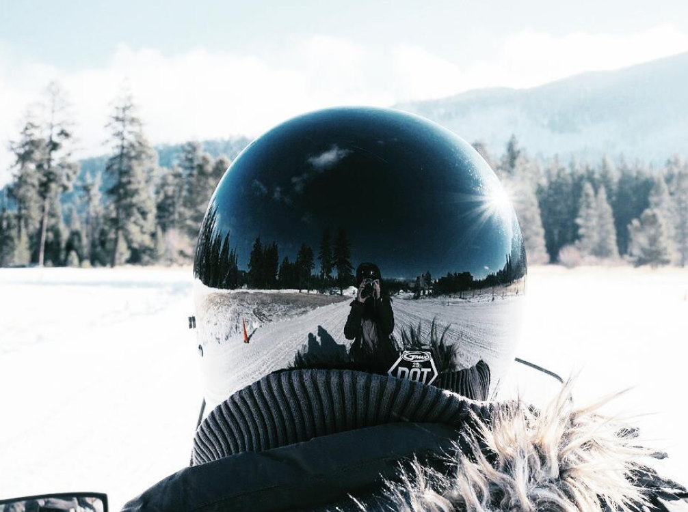
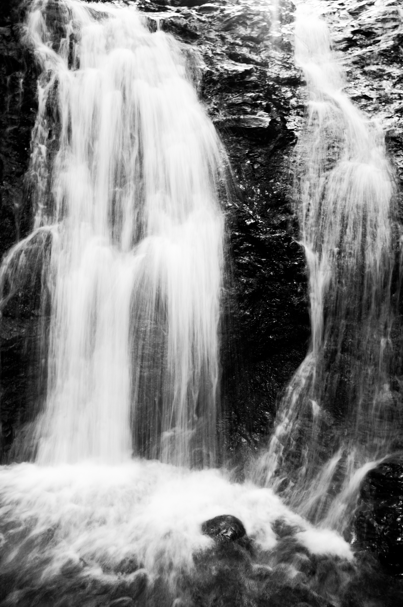
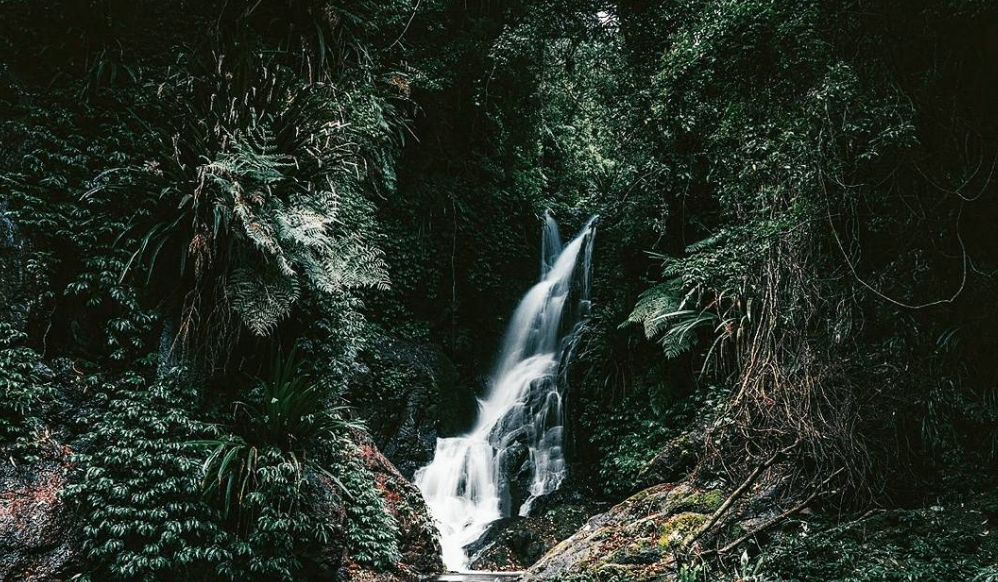
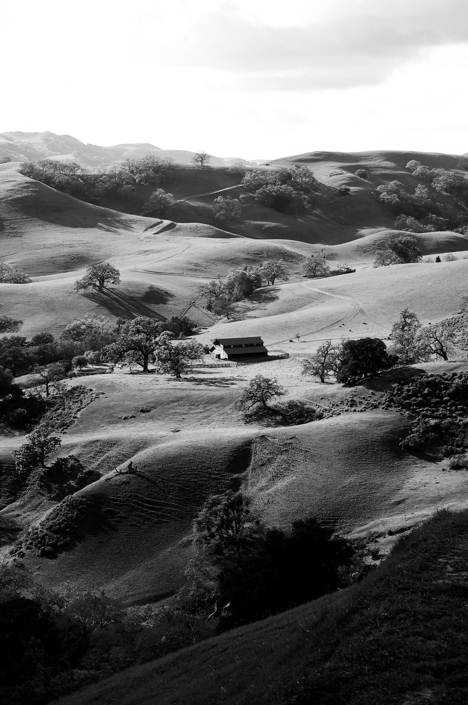
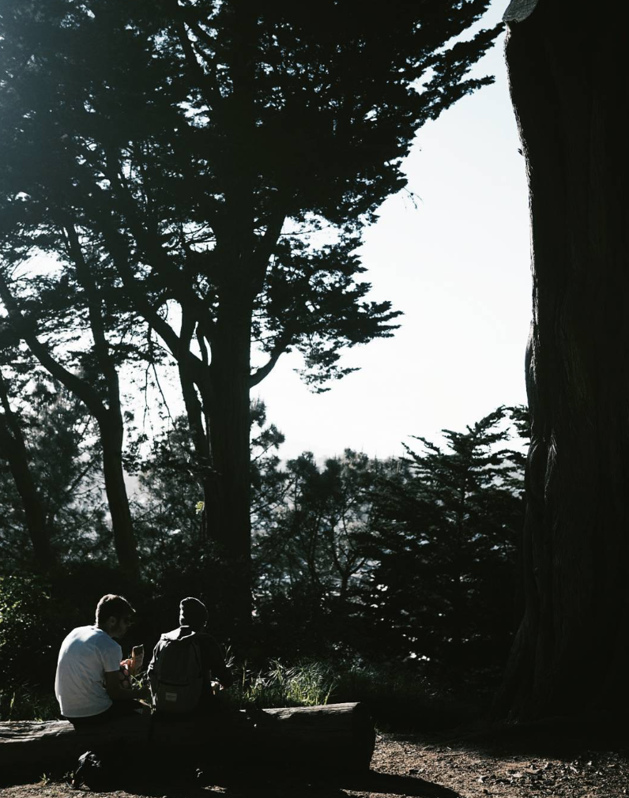
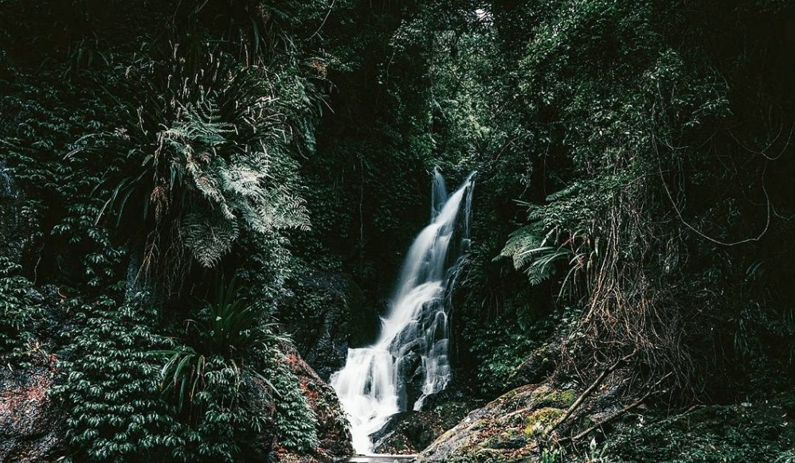
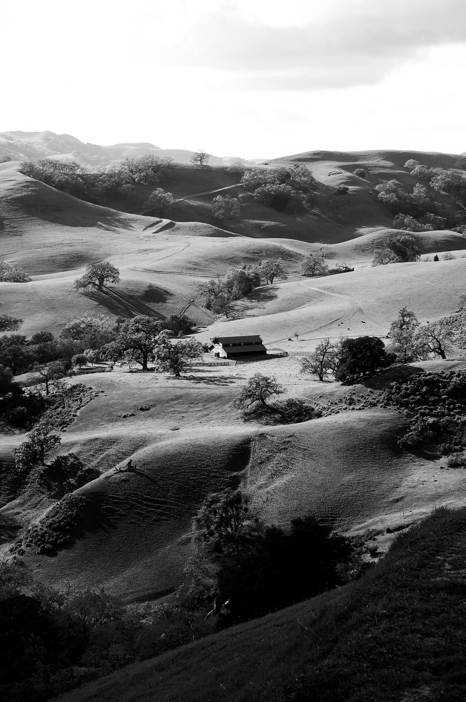
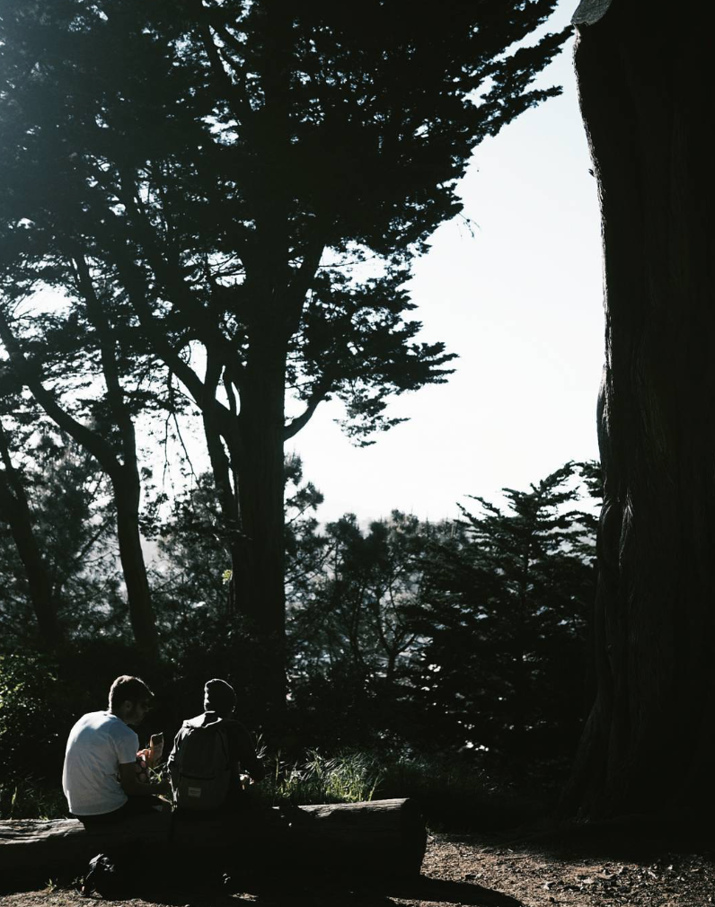

VAST SITES - "Small People, Big Places"
BLACK & WHITE WATERFALL STUDIES - "Experimenting with aperture (f-stop), ISO, and shutter speed"
LANDSCAPES
 





CREATURES


LINES AND REPETITION
"THE TERRORS OF OVERDRINKING" BOTTLES ACTIVIST PROJECT
ILLUSTRATION WITH PRIMARY COLORS